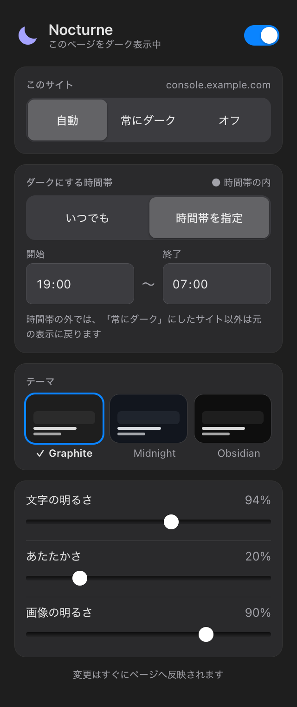
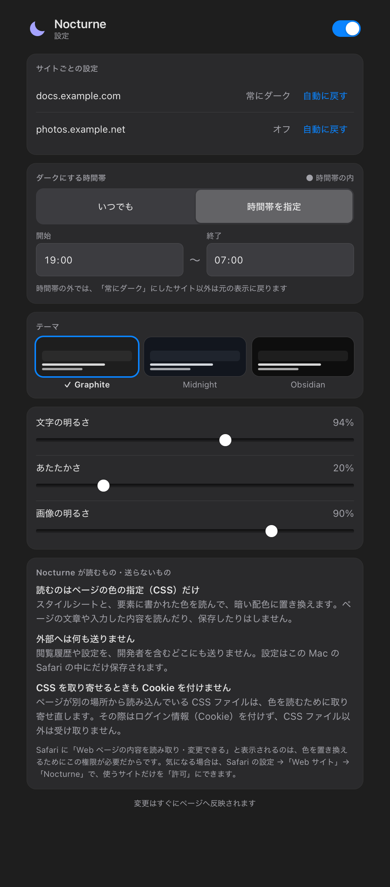

使い方
入れてから、夜に使えるようになるまでの手順です。数分で終わります。
1. 入れて、Safari で有効にする
App Store から入れる
Mac App Store で「Nocturne」を入れます。
Nocturne のアプリを一度開く
アプリケーションフォルダの Nocturne を開くと、Safari に機能拡張が登録されます。開いた画面の「終了して Safari の設定を開く…」から次の手順へ進めます。
Safari で Nocturne をオンにする
Safari の設定 →機能拡張→ 一覧の「Nocturne」にチェックを入れます。
2. サイトでの許可
Safari は、機能拡張がサイトで動く前に許可を求めます。ツールバーの月のアイコンを押すと、許可の選び方が表示されます。
すべてのサイトで使う場合
月のアイコン →「すべての Web サイトで常に許可」を選びます。明るいサイトを開くと、自動でダーク表示になります。
一部のサイトだけで使う場合
使いたいサイトを開いて、月のアイコン →「この Web サイトで常に許可」を選びます。サイトごとに繰り返します。まとめて設定するときは、次の「使うサイトだけに絞る」を見てください。
色を置き換えるために必要な権限なので、Safari が必ず表示します。Nocturne が読むのはページの色の指定（CSS）だけで、外部へは何も送りません。くわしくはプライバシーポリシーをご覧ください。
使うサイトだけに絞る
すべてのサイトで許可しなくても使えます。許可していないサイトでは、Nocturne はページを一切読みません。
Safari の設定の「Web サイト」を開く
Safari の設定 →Web サイトを開き、左の一覧の下のほうにあるNocturneを選びます。
使うサイトを「許可」にする
右側に、これまでに開いたサイトが並びます。使いたいサイトを「許可」にします。
ほかのサイトを「拒否」にする
右下の「その他の Web サイトを訪問時」を「拒否」にすると、一覧で許可したサイトだけで動きます。「確認」にすると、サイトを開くたびに月のアイコンで選べます。
許可はしたまま、Nocturne の中でサイトごとにオフにすることもできます（月のアイコン →「このサイト」→「オフ」）。
3. 見え方を整える
ツールバーの月のアイコンを押すと、次の設定ができます。変更はすぐに開いているページへ反映されます。

| 右上のスイッチ | すべてのサイトでのオン・オフ。 |
|---|---|
| このサイト | 自動：明るいサイトだけダークにし、もともと暗いサイトはそのまま。 常にダーク：サイトの配色や時間帯に関係なくダークに。 オフ：このサイトでは何もしない。 |
| ダークにする時間帯 | いつでも、または時間帯を指定（例: 19:00〜07:00。日をまたいでも可）。時間帯の外では、「常にダーク」にしたサイト以外は元の表示に戻ります。時刻が来ると、開いているページも自動で切り替わります。 |
| テーマ | Graphite（macOS 標準の灰）、Midnight（青みのある濃紺）、Obsidian（より深い黒）。 |
| 文字の明るさ | 85〜100%。暗い部屋では少し下げると目が楽です。 |
| あたたかさ | 0〜100%。面と文字に琥珀色を少し混ぜます。 |
| 画像の明るさ | 60〜100%。写真や動画の明るさを落とします（色は反転しません）。 |
Safari の設定画面から変える
Safari の設定 →機能拡張→ Nocturne →「設定…」からも、時間帯・テーマ・明るさを変えられます。ここでは、「常にダーク」「オフ」にしたサイトの一覧を見て、「自動に戻す」で元に戻せます。Nocturne が読むもの・送らないものの説明もここにあります。

うまく表示されないとき
月のアイコンが出ない／ダークにならない
Safari の設定 →機能拡張で Nocturne にチェックが入っているか、そのサイトで許可しているかを確認してください。それでも変わらないときは、Safari を終了（⌘Q）して開き直してください。
アップデートしたのに新しい機能が出ない
Safari は、起動中に読み込んだ機能拡張を使い続けます。Safari を終了（⌘Q）して開き直してください。
一部だけ明るいまま残る
画像として描かれた背景などは置き換えられないことがあります。許可するサイトを絞っている場合は、CSS を別のドメインから読み込んでいるサイトで一部が置き換わらないことがあります。月のアイコン →「このサイト」→「常にダーク」も試してください。
夜なのにダークにならない
「ダークにする時間帯」を指定している場合、時間帯の外では元の表示に戻ります。また、サイトの設定が「自動」で、そのサイトがもともと暗いと判断された場合は、そのまま表示します。
解決しないときはお問い合わせへ。